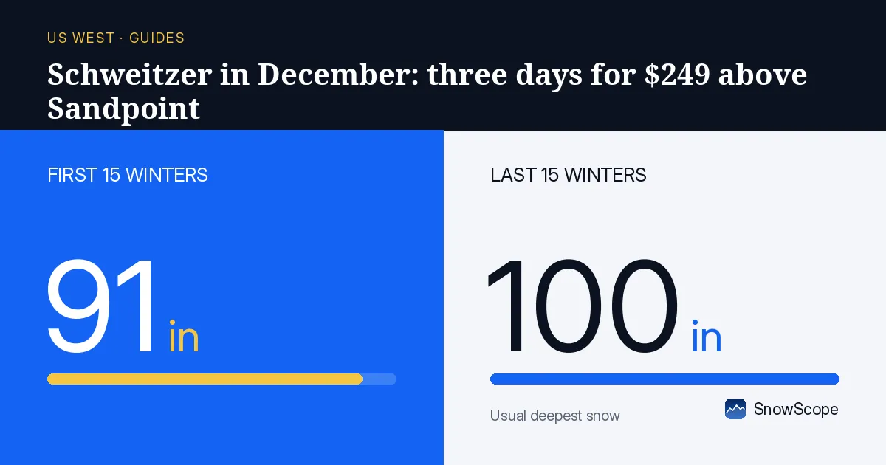
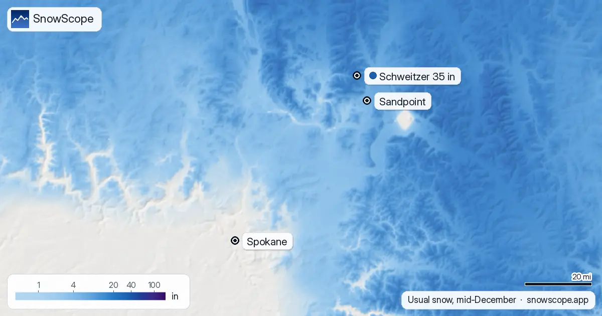

Schweitzer in December: three days for $249 above Sandpoint
Schweitzer is a big mountain with a small-town base: Sandpoint and Lake Pend Oreille below, a long ridge of lifts above. For a December trip, its 3-Pack at $249 for the 2026/2027 winter turns a resort weekend into something close to small-hill money.
See the live snow forecast for Schweitzer Mountain Resort in the SnowScope appSnow depth, powder alerts and the 3D map, free.
From the lake to the ridge
On our mapping Schweitzer has 10 lifts and about 46 mi (74 km) of runs, from roughly 4,010 ft (1,221 m) up to 6,390 ft (1,949 m). That height range explains its December: the base and the top are in different winters for most of the month.

The 3-Pack, in plain words
The 3-Pack gives three days of skiing for $249 and is valid for the 2026/2027 winter only. The resort itself puts that at $83 per day. We could not read a full-day window price on its site, so we compare with the pack rather than with a single ticket.
Three days also fits the snow: you do not have to bet everything on one December date.

A big gap between bottom and top
On a typical 15 December, the base has 22 in (55 cm), mid-mountain at about 5,200 ft (1,585 m) 35 in (90 cm), and the top 54 in (138 cm). By Christmas Day the top reaches 60 in (152 cm) and mid-mountain 43 in (109 cm).
The odds at mid-mountain are strong: 85 % of winters had 20 in (50 cm) or more on 15 December and 98 % by 25 December. The share of good-snow weeks there grows from 72 % in the first week of December to 98 % in the week of Christmas. Lasting snow typically arrives at mid-mountain in early November, later than at the Rockies areas.
Compared with Lookout Pass and Brundage
Lookout Pass, east on I-90 at the Montana line, charges $63 midweek with a reservation and had 30 in (75 cm) at mid-mountain on a typical 15 December. Brundage, far to the south near McCall, starts dynamic tickets at $65 on select days and had 30 in (77 cm).
Schweitzer costs more per day than their cheapest tickets, but it has the deepest top-of-mountain snow of the three and far more terrain.
Then and now, and last winter
Mid-mountain had 41 in (104 cm) on a typical 15 December in the first 15 winters of our record, and every winter passed 20 in; in the last 15 winters it was 32 in (80 cm) and 73 %. Last winter was very lean on that date, with 6 in (16 cm) at mid-mountain. A three-day pack lets you wait for the right days.
Tips for skiers
- Buy the 3-Pack before the trip and spread the days over the second half of December.
- The mountain road up from Sandpoint is steep: carry chains or use snow tires.
- Early in December, ride to the upper lifts: the base can be thin.
- Fog and low cloud are common here: goggles with a low-light lens help.
References and credits
- Schweitzer, lift ticket 3-Pack 2026/2027 (official) www.schweitzer.com/plan-your-trip/deals-and-packages/lift-ticket-3pack
- Lookout Pass, lift tickets 2026-2027 (official) skilookout.com/lift-tickets/
- Brundage Mountain, daily lift tickets (official) brundage.com/daily-lift-tickets/
- OpenSkiMap (mapped lifts and runs) openskimap.org/
- avalanche.org, US avalanche centers and forecasts avalanche.org/
About these numbers
Snow numbers: SnowScope snow history, 46 past winters (1980-81 to 2025-26) at the base, mid-mountain and top heights given, a reconstruction of past snow for an area corrected for height (ERA5-Land based; Snow_Hydro 1 km for Morocco), not the ski area's own snow reports. Current snow: the SnowScope snow map. Lifts, runs and heights: OpenSkiMap mapping. Prices: the official pages listed below, read on 13 November 2026; dynamic prices change with the date and with demand.
Official avalanche bulletins: avalanche.org (US national portal)
Cite this report
For research, teaching or the press: the numbers and charts are free to reuse under CC BY 4.0 with this citation.
SnowScope (2026), Schweitzer in December: three days for $249 above Sandpoint, https://snowscope.app/blog/en/2026/11/schweitzer-sandpoint-december-3-pack-deal.html, accessed 2026-11-14
SnowScope (Atlas Labs). (2026, November 14). Schweitzer in December: three days for $249 above Sandpoint. SnowScope snow reports. https://snowscope.app/blog/en/2026/11/schweitzer-sandpoint-december-3-pack-deal.html
BibTeX
@misc{snowscope2026schweitzersandpointdecem,
author = {{SnowScope (Atlas Labs)}},
title = {Schweitzer in December: three days for $249 above Sandpoint},
year = {2026},
month = nov,
howpublished = {\url{https://snowscope.app/blog/en/2026/11/schweitzer-sandpoint-december-3-pack-deal.html}},
note = {Published 2026-11-14 20:57 UTC; accessed 2026-11-14}
}· CC BY 4.0 · Methods, data and tools →
Schweitzer Mountain Resort: snow and temperature by height, this winter vs last (tools) →
Follow Schweitzer Mountain Resort
Free: a message when fresh snow is coming, and the forecast every morning.
More snow reports

Aspen Snowmass at 5 centimetres, 23 percent of normal for mid-November. Freezing levels above 2,600 metres brought rain instead of snow across the US West on November 8.

Telluride holds 115 cm (45 in) on 8 November. The freezing level climbs to 4,280 m (14,042 ft) on 9 November, bringing rain-on-snow risk to the highest slopes.

The most snow in the US West is at Kendall Mountain: about 53 in (134 cm) on the upper slopes, according to our snow model. Next come Telluride with …